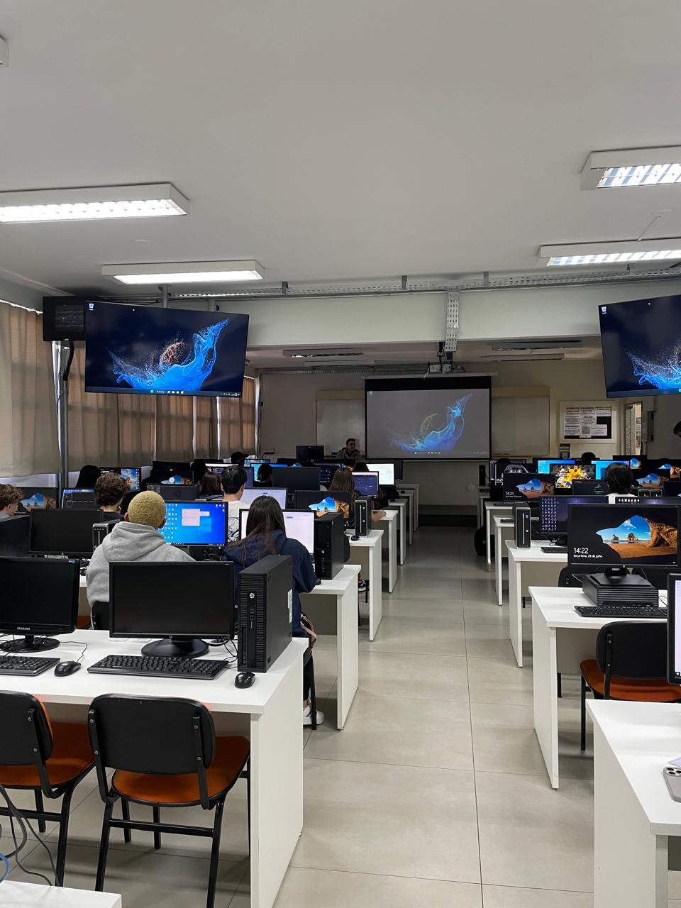

Relatório – 10ª Aula
Data: 28/07/2026
Turma: A
Instrutor:Victor
Design no CSS
Hoje foi a volta das aulas no projeto Pensamento Computacional, tivemos poucos alunos presentes na aula mas mesmo assim seguimos normalmente, inicialmente o Victor falou perguntou se os alunos viam a necessidade de uma revisão do que foi visto nas ultimas aulas, e a maioria disse que não precisava, dessa forma seguimos com o conteúdo da aula que era CSS, especialmente algumas dicas e formas de fazer um bom design de páginas com CSS. Foi explicado a importância das cores na página e formas de montar uma boa paleta de cores, onde os alunos foram introduzidos ao Adobe Colors, um site para facilitar a escolha de paletas de cores com base no circulo cromático. Além das cores, vimos também a importância das fontes, visto que cada estilo de fonte pode mudar completamente a forma como alguém de fora vê e entende a página.
No geral foi uma aula bem calma e um pouco maçante, pois não tinha muita prática, mesmo que seja um conteúdo muito interessante e importante. Percebi que muitos alunos se interessaram pela parte das cores e como elas afetam os visuais e perspectivas, já que vários alunos ficaram boa parte da aula montando, comentando e mudando paletas de cores dentro do site da Adobe.
